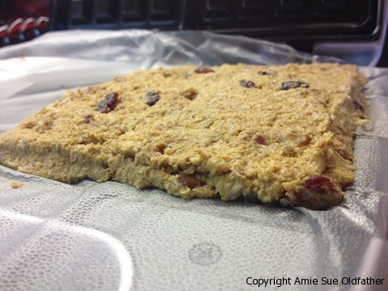
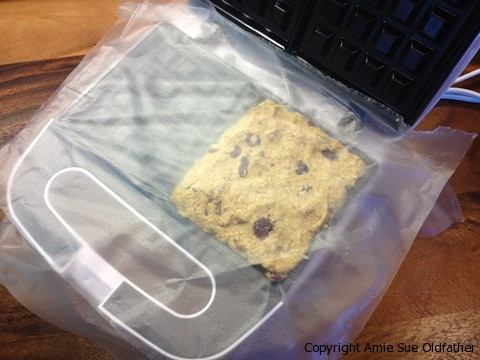
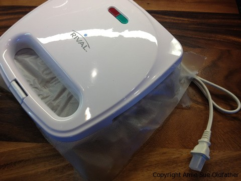
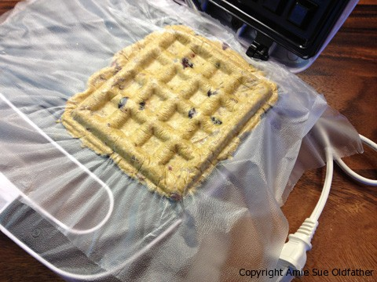
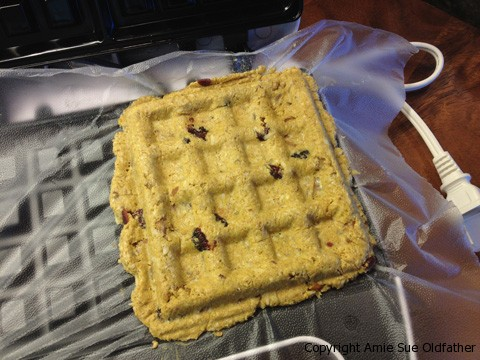
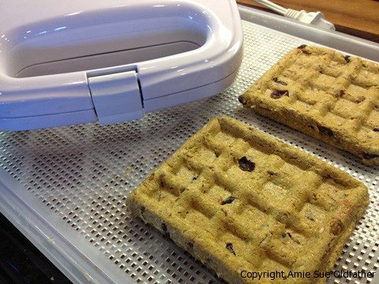
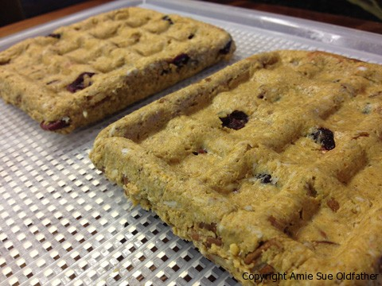

Autumn Harvest Pumpkin Waffles
~ raw, vegan, gluten-free ~
Waffle… what is a waffle? Mitch Hedberg says, “A waffle is like a pancake with a syrup trap.” I don’t know the man, but I couldn’t agree more. :) Did you know there is a National Waffle Day? Am I the only one in the dark about such things?!
Created to celebrate the first waffle iron patent issued 1869, August 24 has long been known as National Waffle Day! Wouldn’t you know it, I missed it by a few months.
So, I missed that “holiday, ” BUT I am still safe and now consider myself ahead of the game because March 25 is International Waffle Day which originated in Sweden where it is called Våffeldagen. There are several types of waffles – American, Belgian, Scandinavian, Liège, Hong Kong, Dutch stroopwafels, and now Rawaffles!
I didn’t grow up eating waffles. I did have them every so often as a treat when we would eat out, but I bet I can count on one hand the times that ate them as a child.
In my early 30s, I did go through a phase of eating Eggo Waffles that I would throw in the toaster and then slather peanut butter on them, but that was short-lived.
I find that there is something comforting about waffles. Those golden honeycombed pockets are perfect for serving with syrup, fresh fruit, whipped cream, jam, honey, apple butter, peanut butter, chocolate, or anything you can think of.
If you don’t have a waffle maker, you can usually pick up an inexpensive one for around $12.00 at a department or household store, or better yet, check out the local second-hand stores. Who cares if it works or not, right? If you live in an area where you need to mail order, Amazon has some cheap ones. Well, I hope you enjoy this recipe. Many blessings and please comment below. amie sue
Ingredients:
Dry Ingredients:
Wet Ingredients:
Add in at the end:
Preparation:
- Combine; buckwheat, oats, pumpkin spice, cinnamon, salt, and mix until everything is well coated.
- In a food processor, fitted with the “S” blade, combine; buckwheat, oats, pumpkin spice, cinnamon, salt, and process until everything is broken down into a powdery form.
- Add; pumpkin puree, water, maple syrup, and liquid stevia. Process until smooth and creamy. Transfer to a medium-sized bowl.
- Hand mix in the pecans, raisins, and coconut.
- Line the waffle maker with plastic wrap and with your fingers, press batter into the mold.
- The amount will differ from machine to machine, due to size, but you want to make sure there is enough batter, so the waffle maker imprints the waffle pattern on both sides.
- After evenly spreading the batter over the mold, cover the top of the batter with another piece of plastic wrap. Close the waffle maker, squeezing it shut.
- Open, remove the top plastic piece and lift the waffle out.
- Place it on the mesh sheet that comes with the dehydrator. Trim the excess batter if need be.
- Dehydrate at 145 degrees (F) for 1 hour, decrease to 115 degrees (F) and continue to dry for 16 hours or until desired dryness is achieved.
- Remove from dehydrator and serve warm.
- Freeze in an airtight, freezer-proof container for up to 3 months. Will last in the fridge for up to 3 weeks.
The Institute of Culinary Ingredients™
- To learn more about maple syrup by clicking (here).
- Why do I specify Ceylon cinnamon? Click (here) to learn why.
- What is Himalayan pink salt and does it really matter? Click (here) to read more about it.
- Are oats gluten-free? Yes, read more about that (here).
- Are oats raw? Yes, they can be found. Click (here) to learn more.
- Do I need to soak and dehydrate oats? Not required but recommended. Click (here) to see why.
Culinary Explanations:
- Why do I start the dehydrator at 145 degrees (F)? Click (here) to learn the reason behind this.
- When working with fresh ingredients, it is important to taste test as you build a recipe. Learn why (here).
- Don’t own a dehydrator? Learn how to use your oven (here). I do however truly believe that it is a worthwhile investment. Click (here) to learn what I use.



Don’t forget to unplug the waffle maker. haha So backwards.




© AmieSue.com